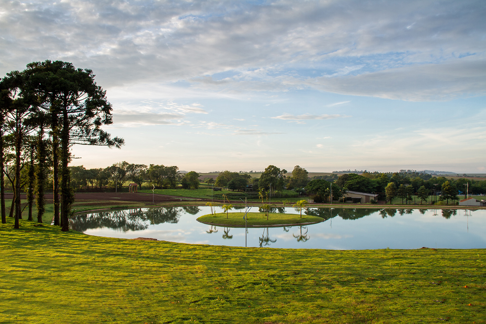

História
Missal possui uma rica história ligada à colonização e agricultura, uma cidade acolhedora, que cultiva as tradições alemãs, herdadas de seus pioneiros, teve sua formação a partir do desmembramento do município de Medianeira e a data oficial da sua criação foi em 30 de dezembro de 1981
Turismo
Conheça os principais pontos turísticos de Missal, como o lago municipal, museu municipal e a igreja
Cultura
A cidade é conhecida por suas festas e tradições culturaiscomo a deutsches fest que atraem visitantes de toda a região.